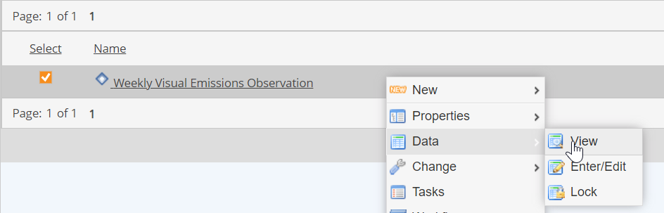
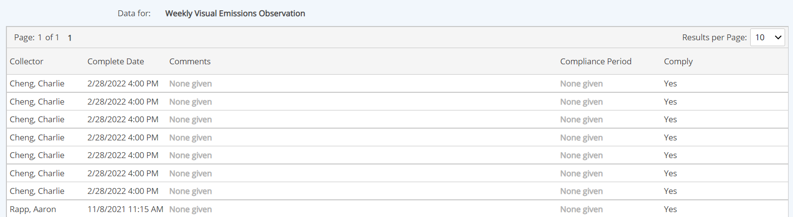

Data for a non-numeric requirement may consist of both compliance data entered directly and data generated by completed tasks that are associated with the requirement.
Each data record for a non-numeric requirement has the following fields:
Collector: Who collected the data. In the case of a task, this will be the task assignee(s) who completed the task.
Complete date: Date when data entry was complete (or task was 100% complete).
Comments: Optional text comments by collector or task assignee.
Compliance Period: Applicable dates for compliance.
Comply: Compliance status (Yes / Yes with Comments / No)
In addition, tasks associated with a non-numeric requirement may store information on time and cost to complete.
To view data for a non-numeric requirement:
Right click the non-numeric requirement and choose Data > View.

Data records for that requirement are displayed, beginning with the most recent. If more than one page of data is returned, select consecutive pages, or increase the results per page to browse more data.

To search for data records within a specific time period:
Choose the Start Date and/or End Dates (inclusive) for the desired data.
For the purposes of the search, the Complete Date of the data record is used. All records with Complete Date within the selected range will be returned.